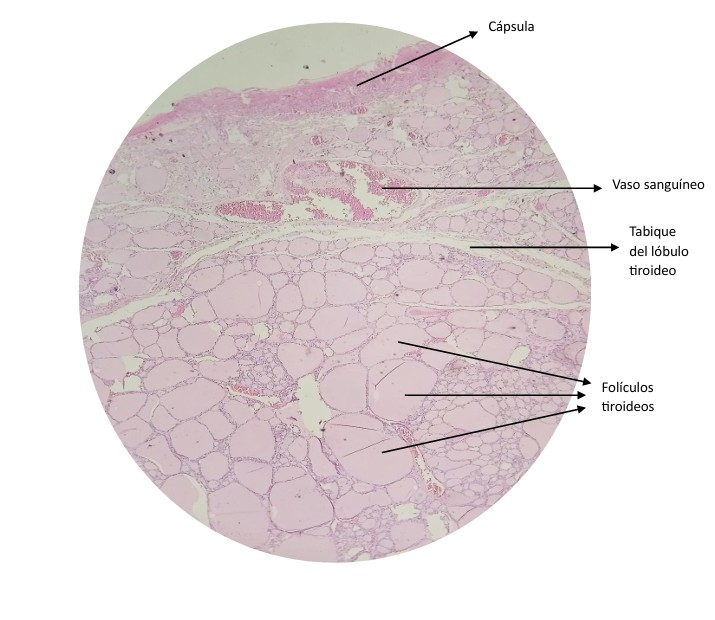
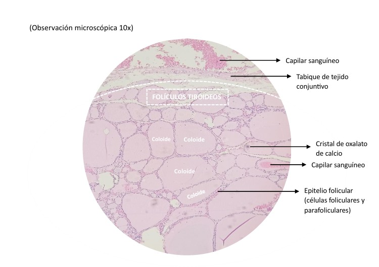
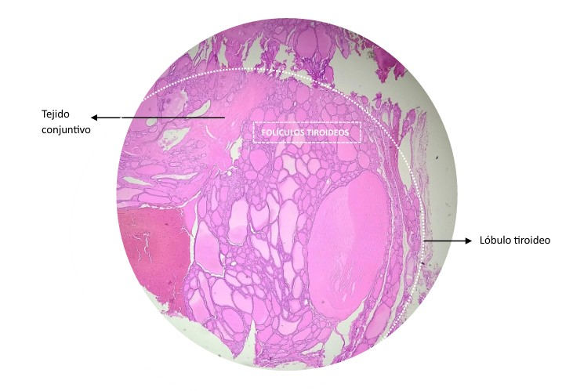
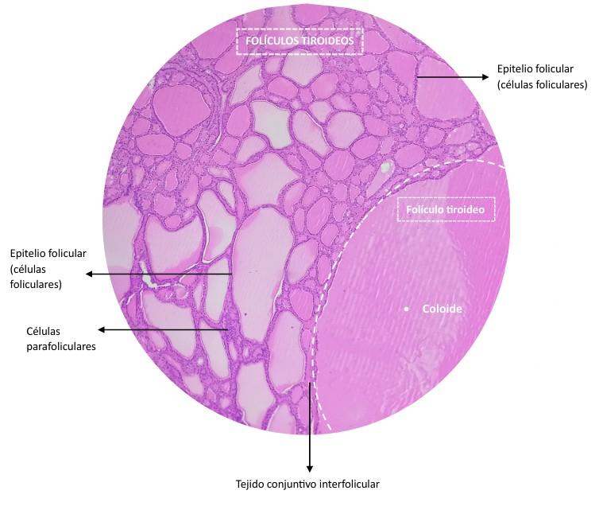

CITOLOGÍA GENERAL ATLAS TIROIDES
HISTOLOGÍA TIROIDES
La glándula tiroides está formada por folículos tiroideos, su unidad funcional, compuestos por un epitelio cúbico simple de células foliculares que producen tiroglobulina y hormonas tiroideas, y un lumen lleno de coloide.
Entre los folículos se encuentran las células parafoliculares o C, que secretan calcitonina.
La glándula está rodeada por una cápsula de tejido conjuntivo y posee un estroma muy vascularizado con capilares fenestrados que facilitan la liberación hormonal.
OBSERVACIÓN DE MUESTRAS
Muestra de Tiroides (Observación microscópica 4x)

Muestra de Tiroides (2) (Observación microscópica 4x)

(Observación microscópica 10x)

(Observación microscópica 40x)

DESCARGA (opcional)
Descargar PDF